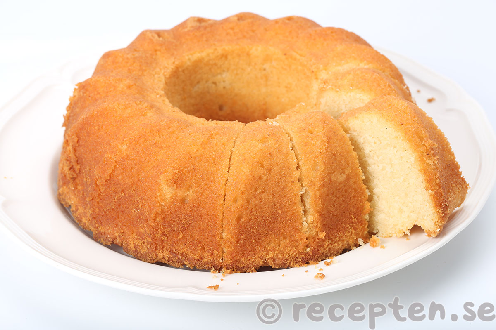

Sockerkaka

Beskrivning
Sockerkaka är helt enkelt bästa bakverket som finns FR!
Väldigt enkel att göra följ bara instruktionerna nedan och se till att du har ingredienserna hemma!
Ingredienser
- 75 g smör
- 1 dl mjölk
- 2 ägg
- 2 dl strösocker
- 2 tsk vaniljsocker
- 3 dl vetemjöl
- 1 1/2 tsk bakpulver
Steg
- Sätt ugnen på 175°.
- Smörj och bröa en form som rymmer ca 1 ½ liter.
- Smält smöret i en kastrull, häll i mjölken och låt det svalna.
- Vispa ägg och socker ljust och pösigt, gärna med elvisp.
- Blanda ner vaniljsocker och mjöl blandat med bakpulver och till sist mjölkblandningen. Rör snabbt ihop till en jämn smet och i formen.
- Grädda i nedre delen av ugnen i ca 35 min.